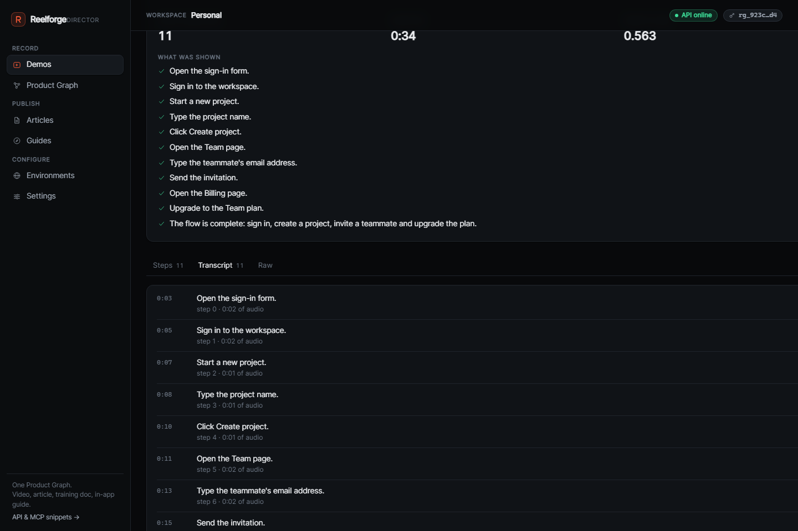

01 — Video
A narrated video, polished like an editor did it
Auto-zoom onto every action, an eased cursor injected into the page, captions and a voiceover timed to the steps. Rendered in one ffmpeg pass.